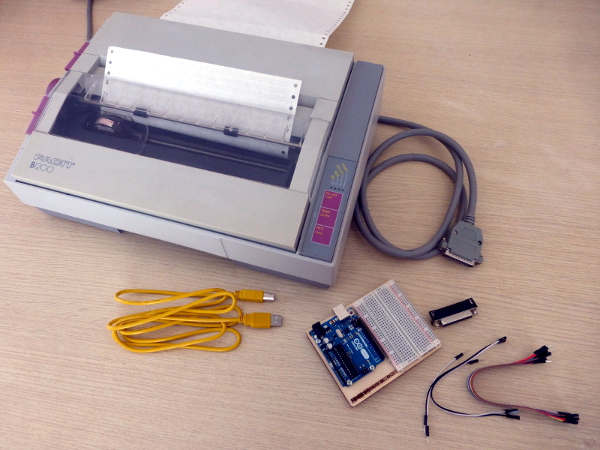
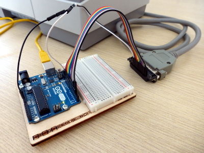
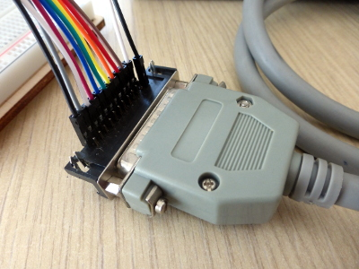
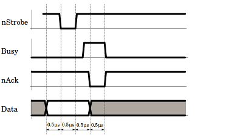
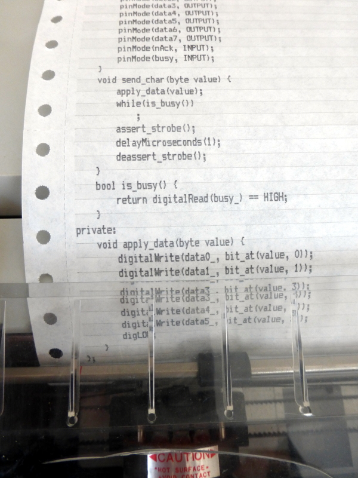

risorse | porta parallela con arduino
Attenzione: ho posto la massima cura ed attenzione nel redigere questi appunti; declino tuttavia ogni responsabilità per eventuali imprecisioni, errori od omissioni, così come declino ogni responsabilità per eventuali danni a cose, proprietà o persone derivanti dall’uso di questi contenuti.
Giorni fa, rovistando in soffitta, mi è capitata tra le mani la stampante ad aghi che usavo a cavallo degli anni 80/90. Si tratta di una Facit B1200, compatibile Epson FX-80. Assieme alla stampante ho trovato pure il cavo per connetterla al PC, ovviamente alla porta parallela. Curioso di sapere se funziona ancora, ho pensato di collegarla al computer portatile che uso a casa, che però non ha la porta parallela. Ho deciso allora di provare a pilotarla con Arduino.
Essendo i segnali di controllo della porta parallela TTL, risultano perfettamente compatibili con i livelli elettrici delle porte digitali di Arduino: non serve predisporre alcun circuito adattatore. Questa circostanza mi ha definitivamente convinto a procedere con l'esperimento.
Oltre alla stampante e ad Arduino, mi sono procurato un connettore D-sub a 25 poli femmina e alcuni cavetti colorati per semplificare il lavoro di cablatura:
L'hardware occorrente per l'esperimento
Il bus di interconnessione è costituito da 12 linee, 11 segnali più la massa:
| Signal | Arduino | D-sub 25 | |
|---|---|---|---|
| nStrobe | 2 | 1 | nero |
| Data 0 | 3 | 2 | bianco |
| Data 1 | 4 | 3 | grigio |
| Data 2 | 5 | 4 | viola |
| Data 3 | 6 | 5 | blu |
| Data 4 | 7 | 6 | verde |
| Data 5 | 8 | 7 | giallo |
| Data 6 | 9 | 8 | arancio |
| Data 7 | 10 | 9 | rosso |
| nAck | 11 | 10 | marrone |
| Busy | 12 | 11 | bianco |
| Ground | GND | 25 | nero |
Le linee Data e Busy lavorano in logica positiva, sono cioè attive a livello alto, mentre le linee nStrobe e nAck in logica negativa, e sono quindi attive a livello basso (da cui il prefisso n).
Realizzazione del bus di interfacciamento
Particolare del bus lato D-sub 25
Il trasferimento dati attraverso la porta parallela è così descritto:
When the printer is ready to receive data, it drives BUSY low. The host drives valid data on the data lines, waits a minimum of 500 ns, then pulses STROBE* for a minimum of 500 ns. Valid data must remain on the data lines for a minimum of 500 ns after the rising edge of STROBE*. The printer will receive the data and drive BUSY active to indicate that it is processing the data. When the printer has completed the data transfer, it will pulse the ACK* line active for a minimum of 500 ns and de-assert BUSY, indicating it is ready for the next data byte.
Sorgente: IEEE 1284 - Updating the PC Parallel Port
Per garantire il corretto funzionamento del trasferimento dati, Arduino deve:
Il diagramma seguente illustra l'andamento dei livelli elettrici durante il trasferimento di un byte:
Tipico handshake Centronics
Ho realizzato un modello minimale della porta in C++ che consente di trasmettere un byte alla volta. L'oggetto CentronicsPort contiene l'associazione tra i segnali Centronics e i pin di Arduino ai quali sono connessi, che viene definita all'atto dell'instanziazione:
class CentronicsPort {
const int nStrobe_;
const int data0_;
const int data1_;
const int data2_;
const int data3_;
const int data4_;
const int data5_;
const int data6_;
const int data7_;
const int nAck_;
const int busy_;
public:
CentronicsPort(
int nStrobe,
int data0, int data1, int data2, int data3,
int data4, int data5, int data6, int data7,
int nAck,
int busy)
: nStrobe_(nStrobe)
, data0_(data0), data1_(data1), data2_(data2), data3_(data3)
, data4_(data4), data5_(data5), data6_(data6), data7_(data7)
, nAck_(nAck)
, busy_(busy) {
pinMode(nStrobe, OUTPUT);
pinMode(data0, OUTPUT);
pinMode(data1, OUTPUT);
pinMode(data2, OUTPUT);
pinMode(data3, OUTPUT);
pinMode(data4, OUTPUT);
pinMode(data5, OUTPUT);
pinMode(data6, OUTPUT);
pinMode(data7, OUTPUT);
pinMode(nAck, INPUT);
pinMode(busy, INPUT);
deassert_strobe();
}
...
}
Come si vede, il costruttore ha anche la responsabilità di disattivare la linea nStrobe. L'API pubblica di CentronicsPort è costituita da due metodi, send_char e is_busy:
class CentronicsPort {
...
public:
CentronicsPort(
...
deassert_strobe();
}
void send_char(byte value) {
while(is_busy())
;
apply_data(value);
delayMicroseconds(1);
assert_strobe();
delayMicroseconds(1);
deassert_strobe();
delayMicroseconds(1);
}
bool is_busy() {
return digitalRead(busy_) == HIGH;
}
Il metodo send_char implementa il protocollo IEEE 1284. Le temporizzazioni di 1µs, sebbene non ottimali, sono state scelte perché la libreria di Arduino non consente di realizzarne di minori. Ricorrendo all'assembly sarebbe probabilmente possibile avvicinarsi ai 500ns prescritti dallo standard e aumentare così la velocità di trasferimento dei dati, ma ciò esula dagli scopi dell'esperimento.
L'implementazione si completa con le funzioni di supporto:
class CentronicsPort {
...
private:
void apply_data(byte value) {
digitalWrite(data0_, bit_at(value, 0));
digitalWrite(data1_, bit_at(value, 1));
digitalWrite(data2_, bit_at(value, 2));
digitalWrite(data3_, bit_at(value, 3));
digitalWrite(data4_, bit_at(value, 4));
digitalWrite(data5_, bit_at(value, 5));
digitalWrite(data6_, bit_at(value, 6));
digitalWrite(data7_, bit_at(value, 7));
}
void assert_strobe() {
set_strobe(LOW);
}
void deassert_strobe() {
set_strobe(HIGH);
}
void set_strobe(int level) {
digitalWrite(nStrobe_, level);
}
int bit_at(byte value, int pos) {
return value & (0x01 << pos) ? HIGH : LOW;
}
}
Il programma di test invia alla porta parallela i dati ricevuti su quella seriale:
CentronicsPort port(
2, // nStrobe
3, // data0
4, // data1
5, // data2
6, // data3
7, // data4
8, // data5
9, // data6
10, // data7
11, // nAck
12); // busy
void setup() {
Serial.begin(9600);
}
void loop() {
while (Serial.available())
port.send_char(static_cast<byte>(Serial.read()));
}
È con una certa emozione che ho inviato alla stampante il sorgente della classe CentronicsPort:
La prima stampa di prova
Il listato è apparso nitido fin dal primo carattere: notevole, considerando che la stampante è rimasta ferma per più di vent'anni. Anche la cartuccia del nastro ha dato prova di estrema affidabilità!
Ho inizialmente trasferito i file da stampare ad Arduino con un semplice cat:
$ cat file.txt > /dev/ttyACM0
In questo modo tuttavia riuscivo a trasferire un singolo file per volta. Per stampare quello successivo ero costretto a chiudere il terminale ed aprirne un nuovo. Ho provato a configurare nei modi più disparati la porta seriale, senza successo:
$ stty -F /dev/ttyACM0 ispeed 9600 ospeed 9600 -ignpar cs8 -cstopb -echo $ cat file.txt > /dev/ttyACM0
Una delle tante configurazioni provate
Ho scoperto che il problema è noto, e il wiki di Arduino dedica un'intera pagina alla questione (cfr. Arduino and Linux TTY). Personalmente, ho trovato utile il suggerimento di ricorrere a screen. L'installazione avviene nel solito modo:
$ sudo apt install screen
Il collegamento alla porta seriale viene stabilito con il comando:
$ screen /dev/ttyACM0 9600
La velocità di connessione deve corrispondere a quella impostata per l'oggetto Serial dello sketch caricato in Arduino. A questo punto, ogni carattere battuto sulla tastiera viene immediatamente inoltrato ad Arduino. Per inviare un file, si commuta in modalità comando premendo la combinazione di tasti Ctrl+A, :, quindi si immette il comando:
exec !! cat file.txt
Per abbandonare temporaneamente il programma e tornare al terminale si usa la combinazione Ctrl+A, d (detach). Per rientrare nel programma, dare il comando:
$ screen -r
ove r sta per reattach. Per terminare definitivamente il programma, usare la combinazione di tasti Ctrl+A, \.
Pagina modificata il 19/06/2017